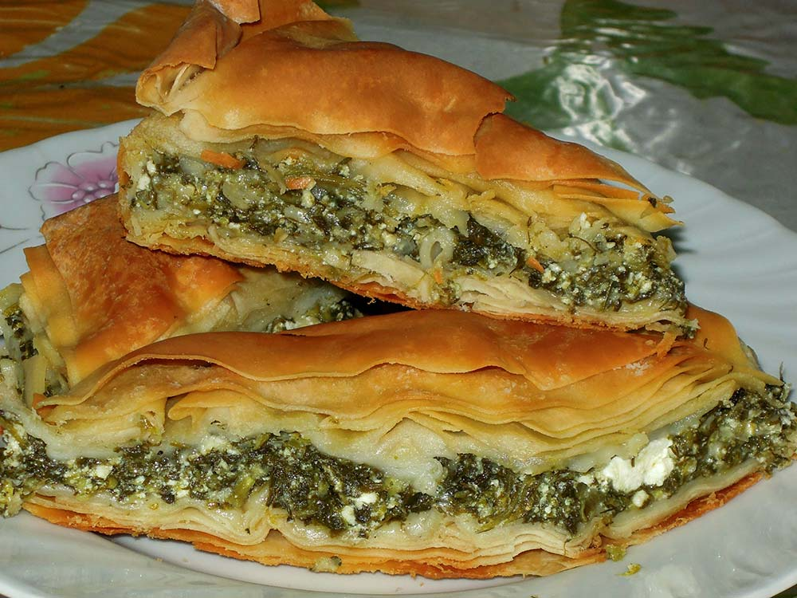

Spanakotiropita/Σπανακοτυρόπιτα

Description
This is a recipe to make the traditional Greek dish, Spanakotiropita. It combines the best elements of the Spanakopita and the Tiropita to make a delicious and savory pie. Once you try it, you will be addicted! (Recipe from themediterraneandish.com)
Ingredients
- 16 oz frozen spinach
- 2 sprigs of parsley
- 1 onion
- 2 garlic cloves
- 2 TBSP olive oil
- 4 eggs
- 10.5 oz feta
- 2 TSP dill
- some black pepper
Steps
- Preheat the oven to 325 degrees F.
- Before mixing the filling, be sure the spinach is very well drained, squeeze out any excess liquid.
- To make the filling: In a mixing bowl, add the spinach and the remaining filling ingredients. Stir well-combined.
- Unroll the phyllo (fillo) sheets and place them between two slightly damp kitchen cloths.
- Prepare a 9 1/2″ X 13″ baking dish like this one. Brush the bottom and sides of the dish with olive oil.
- To assemble the spanakopita: Line the baking dish with two sheets of phyllo (fillo) letting them cover the sides of the dish. Brush with olive oil. Add two more sheets in the same manner, and brush them with olive oil. Repeat until two-thirds of the phyllo (fillo) is used up.
- Now, evenly spread the spinach and feta filling over the phyllo (fillo) crust. Top with two more sheets, and brush with olive oil.
- Continue to layer the phyllo (fillo) sheets, two-at-a-time, brushing with olive oil, until you have used up all the sheets. Brush the very top layer with olive oil, and sprinkle with just a few drops of water.
- Fold the flaps or excess from the sides, you can crumble them a little. Brush the folded sides well with olive oil. Cut Spanakopita ONLY PART-WAY through into squares, or leave the cutting to later.
- Bake in the 325 degrees F heated-oven for 1 hour, or until the phyllo (fillo) crust is crisp and golden brown. Remove from the oven. Finish cutting into squares and serve.
Back to Odin Recipes